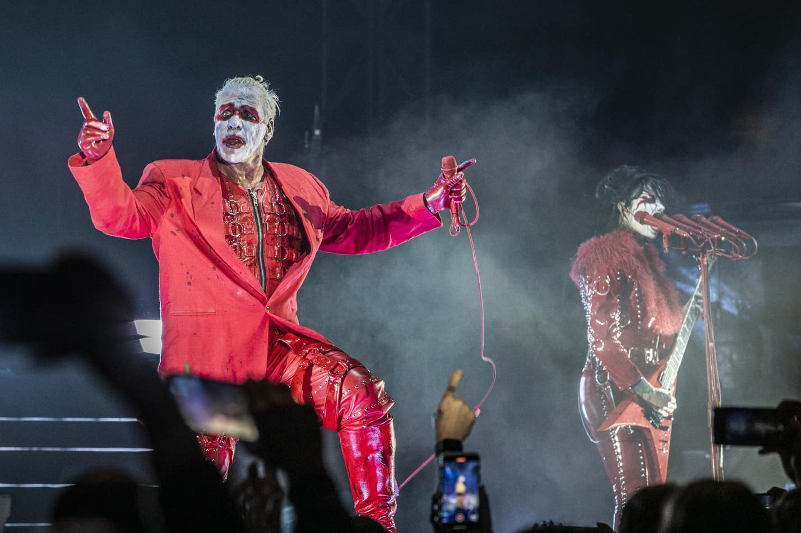

Till Lindemann

Биография
Тилль Ли́ндеманн — немецкий вокалист, автор текстов песен и фронтмен метал-групп Rammstein, Lindemann. Cнялся в 8 фильмах. Имеет образование пиротехника.
Тилль Линдеманн родился 4 января 1963 года в Лейпциге. Отец, Вернер Линдеманн — художник, писатель, автор детских сказок, поэт (написал 43 книги).
В городе Росток в честь него была названа школа.
Группа
Линдеманн стал фронтменом новосозданной в 1994 году в Берлине группы Rammstein
Участвовал во всех релизах группы Rammstein
1995 — Herzeleid
1997 — Sehnsucht
2001 — Mutter
2004 — Reise, Reise
2005 — Rosenrot
2009 — Liebe ist für alle da
2019 — Rammstein
2022 — Zeit
Сольные проекты
В 2015 году Линдеманн создал музыкальный проект Lindemann совместно со шведским продюсером и музыкантом Петером Тэгтгреном
Участвовал во всех релизах проекта Lindemann
2015 — Skills in Pills
2019 — F & M
Ссылки